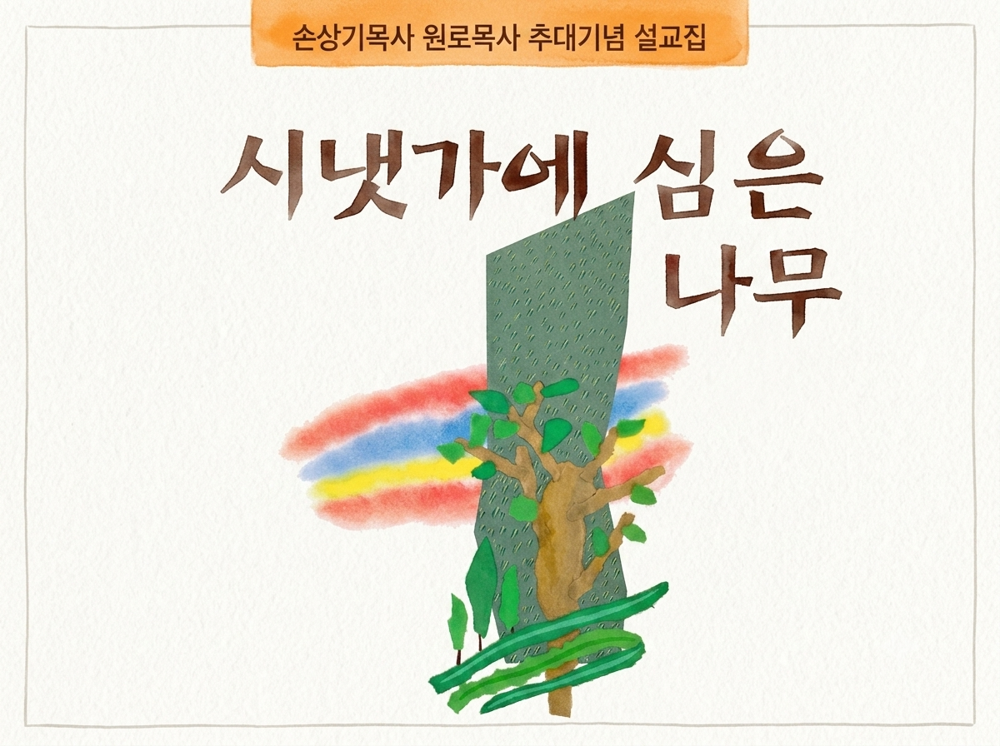

본문 글자

말씀을 가까이, 언제 어디서나
제목·성경본문·설교 내용으로 검색할 수 있습니다.
설교 목록
오늘의 한 문장
다시 펼쳐보기
최근 읽은 설교
Digital Archive
1997년 발간된 『시냇가에 심은 나무』를 디지털로 보존하고, 누구나 편하게 읽고 들을 수 있도록 정리했습니다.
설교집 소개
故 손상기 목사 원로목사 추대기념 설교집 『시냇가에 심은 나무』
102편 디지털 설교집

제목·성경본문·설교 내용으로 검색할 수 있습니다.
1997년 발간된 『시냇가에 심은 나무』를 디지털로 보존하고, 누구나 편하게 읽고 들을 수 있도록 정리했습니다.
故 손상기 목사 원로목사 추대기념 설교집 『시냇가에 심은 나무』